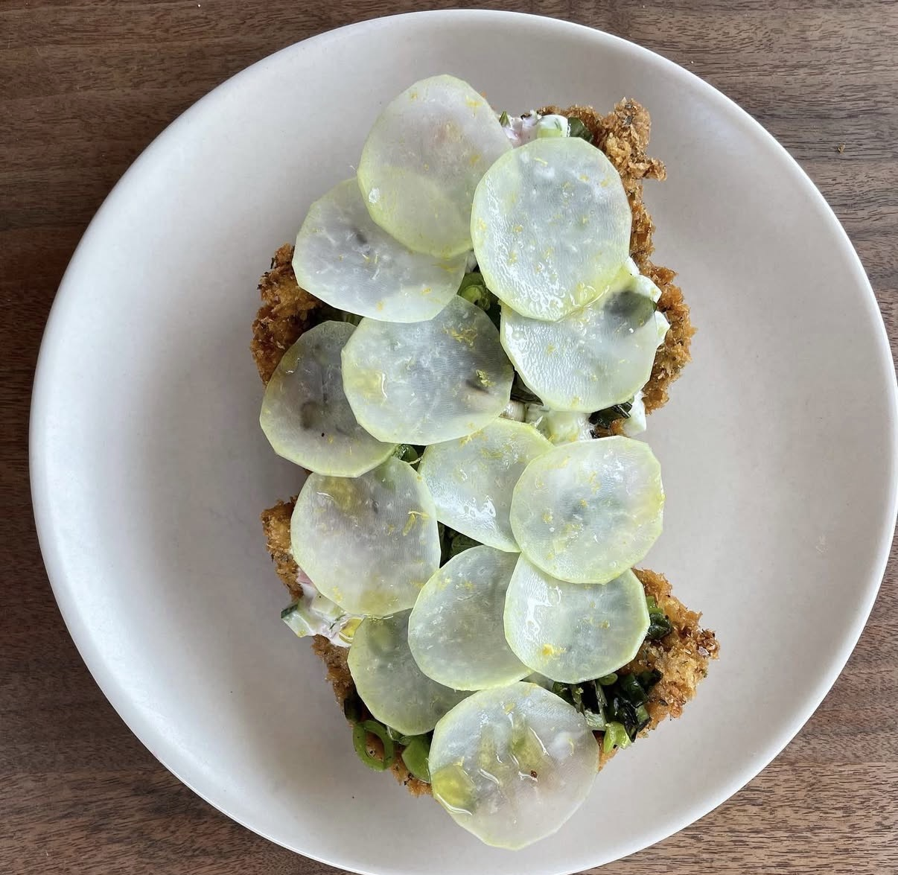

Chicken Piccata
Thin, golden chicken cutlets in a silky lemon-caper butter sauce — this is exactly the kind of dish that turns a Tuesday night into something worth sitting down for. One pan, 25 minutes, and a sauce bright enough to make you squint.
↓ Jump to Recipe
The secret to authentic chicken piccata is the cutlet — it must be pounded thin, to about ¼ inch, so it cooks in about 3 minutes per side and stays juicy. Thick chicken breasts cooked whole take forever and tend to dry out by the time they're cooked through. Pounding to uniform thickness also ensures even cooking edge to edge.
The piccata sauce is a classic Italian pan sauce: you use the browned bits left in the pan (the fond) as your flavor base, then build up with white wine, lemon juice, and cold butter whisked in at the end to create a glossy, emulsified sauce. Capers add a briny punch that makes the bright lemon flavor pop even harder.
Ingredients
- 4 boneless, skinless chicken breasts
- ½ cup all-purpose flour
- 1 tsp kosher salt, ½ tsp black pepper
- 3 tbsp olive oil
- 3 tbsp unsalted butter, divided
- 4 garlic cloves, minced
- 120ml (½ cup) dry white wine
- Juice of 2 large lemons (about 6 tbsp)
- Zest of 1 lemon
- 3 tbsp capers, drained
- ¼ cup fresh flat-leaf parsley, chopped
Instructions
- Pound the chicken. Place each breast between two sheets of plastic wrap. Pound with a meat mallet or rolling pin to ¼-inch uniform thickness. Season both sides with salt and pepper.
- Dredge in flour. Place flour in a shallow dish. Dredge each cutlet in flour and shake off the excess. The flour coating creates the golden crust and thickens the sauce.
- Pan-fry the cutlets. Heat olive oil and 1 tbsp butter in a large skillet over medium-high heat. Cook chicken 3 minutes per side until golden and cooked through (internal temp 165°F). Work in batches — don't crowd the pan. Set aside on a warm plate.
- Build the sauce. In the same pan, cook garlic 30 seconds. Add white wine and scrape up the fond. Simmer 2 minutes until reduced by half. Add lemon juice, zest, and capers.
- Finish with butter. Remove from heat. Add remaining 2 tbsp cold butter and swirl until the sauce is glossy and emulsified. Taste and adjust salt.
- Serve. Return chicken to the pan, turning to coat. Plate and spoon extra sauce over top. Garnish with fresh parsley. Serve with angel hair pasta, mashed potatoes, or roasted vegetables.
Chef's Pro Tips
- Pound between plastic wrap, not wax paper — wax paper tears and sticks.
- Add the cold butter off heat. Hot pan + butter + constant stirring = broken, greasy sauce. Off heat + swirling = glossy and smooth.
- If the sauce is too tart, add a teaspoon of honey to balance the acidity.
- Make it ahead: cook the chicken, refrigerate, and make the sauce fresh when reheating for the best texture.